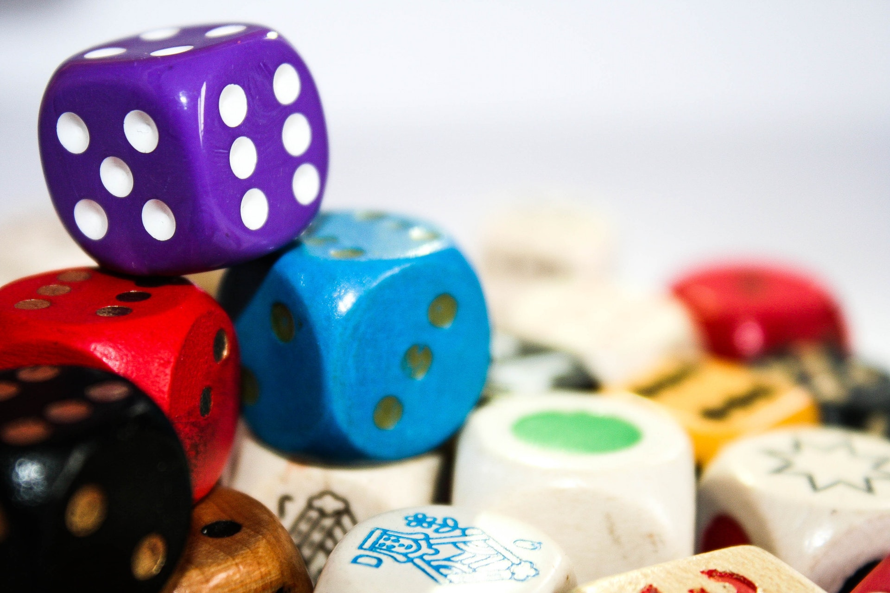

.jpg)



Meaningful play is something I'm passionate about and want to share why it is SO important in all of the environments we encompass in life.

In a TED talk entitled Play Is More Than Just Fun, Stuart Brown (2009) asked the question “So what does play do for the brain?” (9:47) And then, he answered it: “Nothing lights up the brain like play. Three-dimensional play fires up the cerebellum, puts a lot of impulses into the frontal lobe—the executive portion—helps contextual memory be developed, and—and, and, and” (Brown, 2009, 10:31). Brown highlighted a study in which an experimental group, consisting of rats, had the activity of play inhibited. Then, a “cat odor-saturated collar” was fitted to the control and experimental groups. The rats in the experimental group fled, hid, never ventured out, and consequently died. The rats in the control group also hid at first, but “the players slowly explore the environment, and begin again to test things out” (Brown, 2009, 11:25). Accordingly, Brown argued that “play may be important for our survival” (2009, 11:25).
A longitudinal study of those considered to have led “the more interesting and fulfilling lives” pointed to those who had placed playfulness “at the center of things” (Sutton-Smith, 2009, p. 39). The value of play as a “cultural function is to mediate social conflict” (Sutton-Smith, 2009, p. 73). Play is an act which enables one to express their power (Sutton-Smith, 2009, p. 74). Socially, when play becomes competitive, it serves as a vehicle for representing the strengths and power for and of one’s tribe (Sutton-Smith, 2009, p. 75). Play is an act of will in which one can “maintain your chosen identity by exercising commentary on that identity” (Sutton-Smith, 2009, p. 102). Play, without rebuttal, is equated with intrinsic motivation (Sutton-Smith, 2009, p. 187). Play is referred to as “the basic ongoing vehicle for the construction of meaning” (Sutton-Smith, 2009, p. 191).
Fostering an attitude of playfulness addresses many goals at once; “playfulness is a physical, psychological, and emotional attitude toward things, people, and situations” (Sicart, 2014, p. 21). Play becomes an interface through which engaged learning impacts a world, and vice versa. On one hand, “playfulness means taking over a world to see it through the lens of play, to make it shake and laugh and crack because because we play with it” (Sicart, 2014, p. 24). Conversely, “through playfulness, we see the world, and we also see how the world could be structured as play” (Sicart, 2014, p. 24). Even though the event is a simulation of play, there is authenticity in the act because “through playfulness, we open the possibility of expressing who we are” (Sicart, 2014, p. 28).
In a study investigating the impact of chess in a gifted class, the value of such an approach was defended for its ability to provide competition which “was good for students and it taught them appropriate coping skills” and “one of the few things proven to raise IQ scores” (Adams, 2012, p. 243). A gifted programming approach which utilized chess at the elementary level produced the following results: "The students learned to play chess, but more importantly, they learned skills that they would not have been ‘taught’ directly. The students learned to appreciate their opponent in the game, to think through two or three moves ahead, as well as to focus their attention. These skills were those that the teachers in the school began to notice. In my own class, students who had difficulty deciding what to do first when given instructions started asking fewer questions while figuring out the correct steps" (Adams, 2012, p. 245).
Gladwell (2008) says that one needs approximately 10,000 hours of practice in an area before one is able to be called an expert in it (p. 39). If one hopes to nurture advanced ability so that the ranks of expertise fields become established, perhaps play as practice is warranted. In an investigative study regarding expert play performance in the game of Scrabble, “we found significant differences between elite and average-rated players on estimates of both cumulative SCRABBLE study and playing time, with many of the top players reporting cumulative estimates between 5,000 and 10,000 hr since their first exposure to the game” (Tuffiash et al, 2007, p. 132).
Brown, in his book Play, also highlighted the story regarding Cal Tech’s Jet Propulsion Laboratory (JPL) and the dilemma they faced in the 1990s: "Even though JPL hired the top graduates from top engineering schools like MIT, Stanford, and even Cal Tech itself, the new hires were often missing something. They were not very good at certain types of problem solving that are critical to the job" (Brown, 2009, p. 9). JPL leaders sought to understand why and discovered an article written by a business owner who was also perplexed over the same situation. The business owner “found that those who had worked and played with their hands as they were growing up were able to ‘see solutions’ that those who hadn’t worked with their hands could not (Brown, 2009, p. 10). As a result of this discovery, JPL’s hiring process includes questions to determine applicants’ play history.
Adams, T. (2012). Chess From Square a1. Gifted Child Today, 35(4), 243-251. DOI: 10,1177/1076217512455478
Brown, S. (May 2008). Play is more than just fun [Video file]. Retrieved from https://www.ted.com/talks/stuart_brown_says_play_is_more_than_fun_it_s_vital?language=en
Brown, Stuart. (2009). Play: How It Shapes the Brain, Opens the Imagination, and Invigorates the Soul. New York, NY: Penguin Group, Inc.
Gladwell, M. (2010). Outliers: The Story of Success. New York, NY: Little, Brown and Company, Inc.
Ericsson, K., Roring, R., & Tuffiash, M. (2007). Expert Performance in SCRABBLE: Implications for the Study of Structure and Acquisition of Complex Skills. Journal of Experimental Psychology: Applied, 13(3), 124-134. DOI: 10.1037/1076-898X.13.3.124
Sicart, Miguel. (2014). Play Matters. Cambridge, MA: The MIT Press.
Sutton-Smith, B. (1997). The Ambiguity of Play. Cambridge, MA: Harvard University Press.